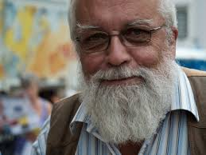

Miguel Ángel López Rodríguez
Nació en Madrid (España) el día 14-06-1965, tiene el
cargo de Presidente desde el año 1990, su teléfono es el 666777888 y su correo es
presidente@foa.es, vive en Calle Argentina, 1, 28086 Madrid. Pertenece a la
Asociación Ornitológica Madrileña con el cargo de Presidente y a la Asociación
Roquetera Ornitológica como criador. Tiene un palmarés como concursante en
campeonatos regionales de 58 medallas de oro, 40 de plata y 76 de bronce.
Alba Correa Correa
Nació en Granada (España) el día 24-06-1983, tiene el cargo
de Secretaria desde el año 2001, su teléfono es el 666555444 y su correo es
secretario@foa.es, vive en Carretera de Ronda, 106, 18003 Granada. Pertenece
como criadora a la Asociación Ornitológica Alhambra. Tiene un palmarés como
concursante en campeonatos regionales de 20 medallas de oro y 10 de plata.

Antonio Gómez Serrano
Nació en Almería (España) el día 29-10-1979, tiene el
cargo de Tesorero desde este año, su teléfono es el 666111222 y su correo es
tesorero@foa.es, vive en Avenida de la Legión, s/n, 04740 Roquetas de Mar
(Almería). Es el presidente de la Asociación Roquetera Ornitológica. Aún no ha
conseguido ninguna medalla.